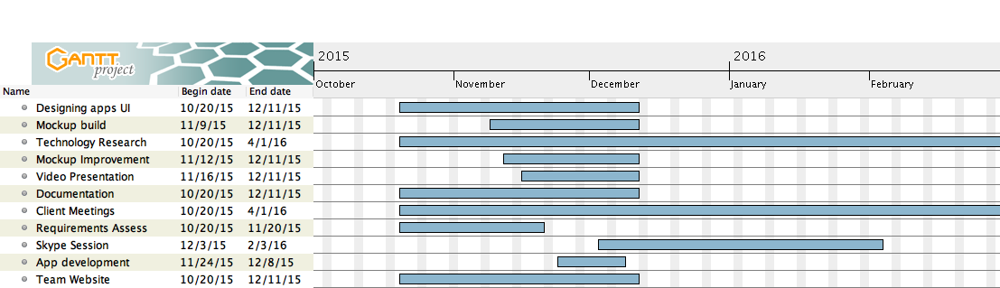

Progress
Tools used, Project Management, Bi-weekly reports, Plans for PoC in Term 2
Tools used
Communication tools
- Facebook Messenger was our preferrd choice of comunication within the team as it is a small team of two and it is available cross-platform.
- Email was our main client and Teaching Assistant communication tool.
File sharing tools
- Github
- Google Docs for Documentation
Design Tools
- Microsoft One Note was used for sketches of application on a Surface Pro 3 (with pen)
- Photoshop was used for Mock-ups
- Creately was used for Database and Main Design schema
Project Management
In order to create the PoC and create a functioning prototype, we set up weekly meetings with our client and Skype meetings with the iNRIC content mananger.
Furthermore, we used a Gantt Chart to establish deadlines.

Bi-weekly reports
Meeting minutes included in Bi-weekly reports
Plans for PoC in Term 2
- Modify existing Drupal database
- Integrate Drupal Database with Application (Either with DrupalGap Module or Drupal Services)
- Test web-version of app before building on Phonegap
- Get Phonegap app to be ready for deployment.
- Test PhoneGap app with Testmunk.
- Publish app on UCL App Lab for further testing.
- Design Login, Register and Search on main iNRIC website with client and content manager.
- Implement Login, Register and Search to main iNRIC website.
- Test main website security.